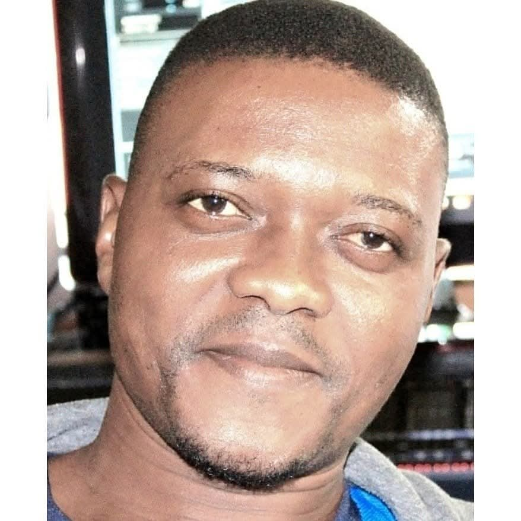

Alain Ayenan
Ingénieur du Son – Studio & Live
Silence inspire me, sound expresses me and passion guides me.
📞 Joining / Contact


Trained in sound recording and mixing by Mr. Euloge ASSOURAMOU, Alain Ayenan is a sound professional with over 15 years of experience in mixing, mastering, live sound reinforcement, multi-track concert recording, and audio processing. / Formé à la prise de son et au mixage par Monsieur Euloge ASSOURAMOU, Alain Ayenan est un professionnel du son doté de plus de 15 ans d'expérience dans le mixage, le mastering, la sonorisation live, l’enregistrement multi-pistes de concerts et le traitement audio.
📌 Retrouvez tous mes liens ici : linktr.ee/alainayenan